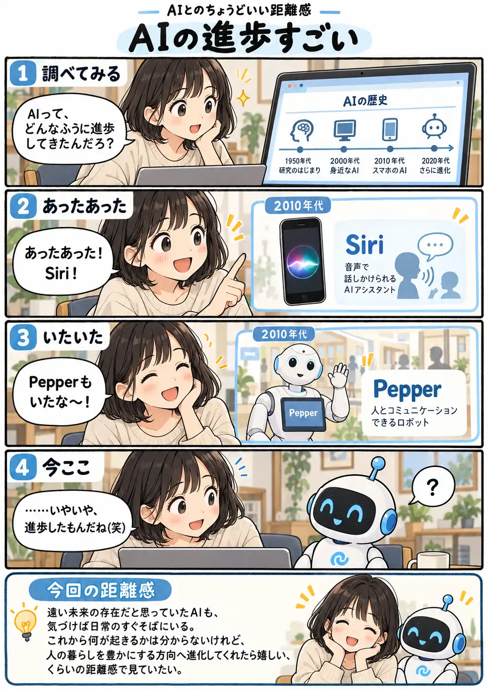

#148
AIの進歩すごい
気づけば、未来はもう目の前にいた

メモ
AIという言葉自体はずっと前からありましたが、身近に感じる形は少しずつ変わってきました。声をかければ答えるAIや、人の姿に近いロボットに驚いていた頃から、今では文章や画像を作るAIと日常的に会話する時代です。
この先どこまで進むのかは分かりません。ちょっと怖い未来を想像することもありますが、振り返ってみると、人の暮らしを便利にする進歩もたくさんありました。さて、次はどこまで行くのでしょう。
今回の距離感
遠い未来の存在だと思っていたAIも、気づけば日常のすぐそばにいる。これから何が起きるかは分からないけれど、人の暮らしを豊かにする方向へ進化してくれたら嬉しい、くらいの距離感で見ていたい。